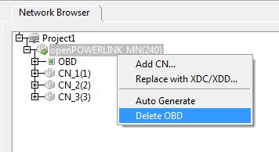
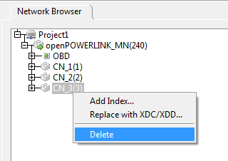
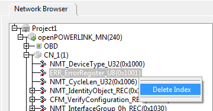
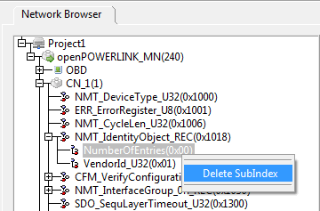

Users can delete the nodes from the network tree.
MN's OBD can be deleted by right-clicking on the MN.

Select 'Delete OBD' menu item, a pop-up appears to ask whether the user wants to delete the node.
CN node can be deleted by right-clicking on the node.

Select 'Delete' menu item , a pop-up appears to ask whether the user wants to delete the node.
To delete the Index of a particular Node, expand the node tree by clicking '+' sign before the node. Then right-click on the Index which has to be deleted.

Select 'Delete Index'. Index will be deleted.

Select 'Delete SubIndex'. The corressponding Sub-Index will be deleted.